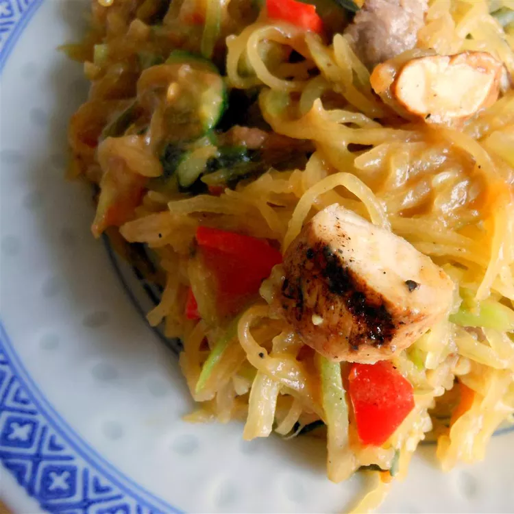

Spaghetti Squash Pad Thai

Description
This low-carb dish is tasty and filling, even if you're not watching your waistline! Spicy and flavorful, this dish is always sure to please!
Ingredients
Sauce:
- 1½ cups chicken broth
- 3 tbsp peanut butter
- 1 tbsp chile-garlic sauce
- 1 tbsp fish sauce
- 1 tbsp soy sauce
- 1 tbsp rice vinegar
- 1 tbsp oyster sauce
- 1 tsp minced fresh ginger
- 1 tsp sesame oil
- ¼ tsp ground black pepper
- 3 tbsp cold water
- 1 tbsp cornstarch
Vegetables:
- 2 tbsp olive oil
- 1 (12 oz) package broccoli coleslaw mix
- 1 zucchini, diced
- 1 red bell pepper, diced
- ½ cup sliced green onions
- ¼ cup chopped fresh cilantro
- 2 cubed cooked chicken breasts
Steps
- Preheat oven to 450 degrees F (230 degrees C). Place spaghetti squash, cut-side up, on a baking sheet.
- Bake in the preheated oven until squash is tender, 30 to 45 minutes. Shred squash meat using a fork and discard the peel.
- Combine chicken broth, peanut butter, chile-garlic sauce, fish sauce, soy sauce, rice vinegar, oyster sauce, ginger, sesame oil, and black pepper together in a saucepan; bring to a boil. Whisk water and cornstarch together in a bowl until smooth; add to broth mixture and continue boiling until sauce thickens, 5 to 10 minutes. Reduce heat to low and simmer sauce.
- Heat olive oil in a large skillet over medium-high heat; saute broccoli slaw, zucchini, red bell pepper, green onion, cilantro, and shredded spaghetti squash until tender, about 10 minutes. Add chicken and sauce to squash mixture; cook and stir until heated through, 3 to 5 minutes.
Home